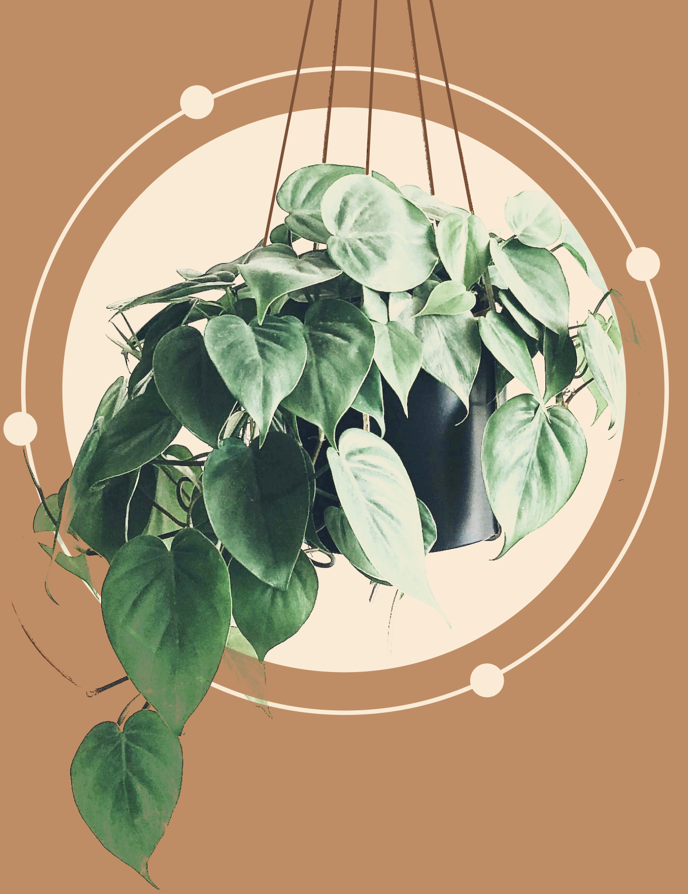
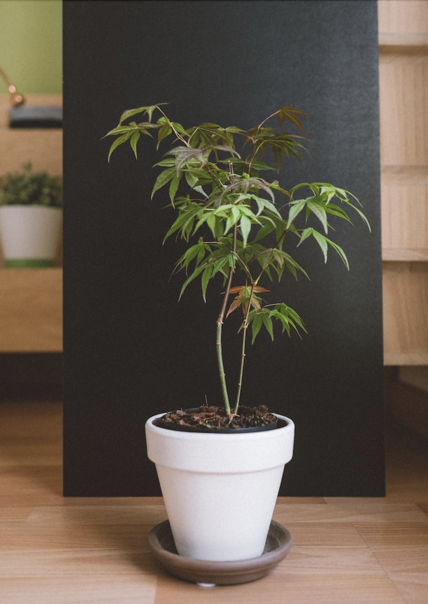

“SUSTAINABLE
AGRICULTURE”

What is “SUSTAINABLE AGRICULTURE” ?
Sustainable agriculture is an approach that aims to meet the needs of the current generation without compromising the ability of future generations to meet their own needs.
-
Improve resource management:
- Encourages efficient use of resources such as water and energy.
- Relies on smart and sustainable irrigation techniques.
-
Promoting agricultural diversity:
- Encourages diversification of agricultural crops to enhance agricultural flexibility.
- Supports the cultivation of local and traditional varieties.
-
Caring for local communities:
- Encourages the involvement of local communities in decision-making processes and identifying their needs.
- Promotes social justice and reduces disparities in access to resources and opportunities.
-
Balance between environment and economy:
- Sustainable agriculture aims to achieve a balance between food production and environmental protection.
- Relies on practices that reduce environmental impact, such as using renewable energy and reducing the use of harmful chemicals.
-
Land improvement and biodiversity conservation:
- Involves maintaining soil and water quality and enhancing biodiversity.
- Encourages long soil life cycle and the use of erosion reduction methods.
Sustainable agriculture is a comprehensive approach that focuses on environmental, economic, and social sustainability in agricultural resource management.